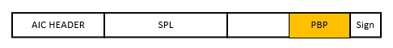
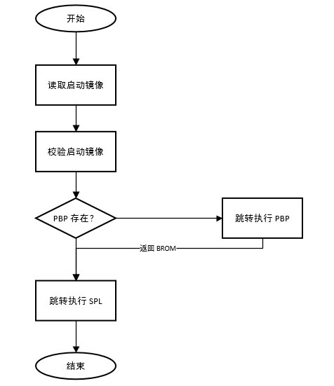
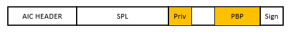

Pre-Boot Program (PBP)
4 Dec 2024
Read time: 1 minute(s)
Pre-Boot Program (PBP) 是 ArtInChip 芯片平台启动过程中的一段程序，在 BROM 程序跳转执行 SPL 之前， 运行的代码。 PBP 程序用于初始化一些不开放的硬件模块，比如 DRAM 控制器的初始化。
存放位置
PBP 程序是以二进制形式保存在 SDK 中，通常位于 target/chip/common/chipname.pbp
在 mk_image.py 生成镜像文件的过程中，PBP 程序与 SPL 程序一起被打包到 AIC 启动镜像文件当中。 具体配置可以查看对应项目的 image_cfg.json 文件。

何时运行
正常启动过程中，BROM 会检查 PBP 程序是否存在，如果存在，则跳转执行 PBP 程序。PBP 程序执行完毕， 会返回到 BROM。BROM 则继续跳转执行 SPL 程序。

参数配置
不同项目，可能需要传递一些配置参数给 PBP 使用，可以通过 AIC 启动镜像的 Private data area 保存这些参数。PBP 在被执行时可以得到该区域的地址和长度，然后自行解析数据，得到具体的参数。

PBP 程序运行时，可以得到 Private data area 的地址。
void pbp_main(u32 boot_param, void *priv_addr, u32 priv_len)
{
...
}